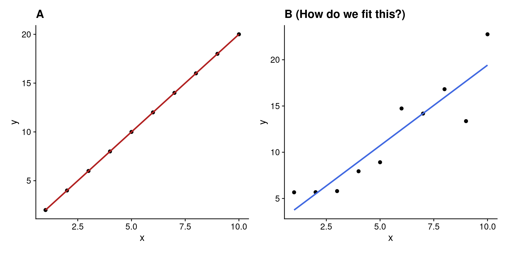

Correlation r: a measure of the strength and direction of the linear relationship between two variables
Is there a causal relationship between two variables?
No: use correlation analysis
Yes: use regression analysis
Simple linear regression modelling
Y_i = \beta_0 + \beta_1 x_i + \epsilon_i
Basically, a deterministic straight line equation y=c+mx, with added random variation that is normally distributed
Y = c + mx + \epsilon
Fitting the line
Y_i = \beta_0 + \beta_1 x_i + \epsilon_i
Y = c + mx + \epsilon
How do we fit a line to data if data are “noisy”?
Code
x <-1:10y <-2* x +rnorm(10, 0, 2)# generate y with predicted valuesy_pred <-2* xdf <-data.frame(x, y)p1 <-ggplot(df, aes(x, y_pred)) +geom_point(size =2) +geom_smooth(method ="lm", se =FALSE, color ="firebrick") +labs(x ="x", y ="y", title ="A")p2 <-ggplot(df, aes(x, y)) +geom_point(size =2) +geom_smooth(method ="lm", se =FALSE, color ="royalblue") +labs(x ="x", y ="y", title ="B (How do we fit this?)")library(patchwork)p1 + p2 +plot_layout(ncol =2)

Least squares
The method of least squares is the automobile of modern statistical analysis: despite its limitations, ocassional accidents and incidental pollution, it and its numerous variations, extensions, and related conveyances carry the bulk of statistical analyses, and are known and valued by nearly all.
– Stigler, 1981 (emphasis added)
Usage
Student’s t-test
linear regression
ANOVA
logistic regression
nonlinear regression
ridge regression
lasso regression
principle component analysis
generalised linear model
etc…
Galton’s data revisited
Galton’s data on the heights of parents and their children.
Is there a relationship between the heights of parents and their children?
Code
library(HistData)data(Galton)fit <-lm(child ~ parent, data = Galton)ggplot(Galton, aes(x = parent, y = child)) +geom_point() +geom_smooth(method ="lm", se =FALSE, color ="firebrick") +labs(x ="Parent height (inches)", y ="Child height (inches)")
How did we end up with the line in the plot above?
The data must meet certain criteria, which we often call assumptions. They can be remembered using LINE:
Linearity. The relationship between y and x is linear.
Independence. The errors \epsilon are independent.
Normal. The errors \epsilon are normally distributed.
Equal Variance. At each value of x, the variance of y is the same i.e. homoskedasticity, or constant variance.
Tip
All but the independence assumption can be assessed using diagnostic plots.
Assumptions: Why do we care?
If the assumptions are met, then we can be confident that the model is a good representation of the data.
If they are not met, the results are still presented, but our interpretation of the model is likely to be flawed.
Warning
R will not warn you if the assumptions are not met. It is up to you to check them!
How do we check the assumptions?
Recall that the linear model is a deterministic straight line equationy = c + mx plus some random noise\epsilon:
Y_i = \beta_0 + \beta_1 x + \epsilon
If the only source of variation in y is \epsilon, then we can check our assumptions by just looking at the residuals \hat{\epsilon}.
How do we get the residuals?
Fit the model…
Residuals need to be calculated from the model, not from the raw data.
In R, these values are stored automatically.
Another way to look at residuals
Once you have fitted the line, it does not change. The residuals are the vertical distances between the points (not shown) and the line.
Checking assumptions
linearty | normality | equal variance | outliers
1-step
par(mfrow =c(2, 2)) # need to do this to get 4 plots on one pageplot(fit)
Residuals vs. Fitted: check for linearity, equal variance.
Q-Q Residuals: check for normality.
Scale-Location: check for equal variance (standardised).
Residuals vs. Leverage: check for outliers (influential points).
Assumption: Linearity
Residuals vs. fitted plot looks at the relationship between the residuals and the fitted values.
If the relationship is linear:
Residuals should be randomly scattered around the horizontal axis.
The red line should be reasonably straight.
plot(fit, which =1)
Assumption: Normality
Q-Q plot looks at the distribution of the residuals against a normal distribution function (the dotted line).
Sometimes, a histogram is still useful to see the shape of the distribution.
par(mfrow =c(1, 2))plot(fit, which =2)hist(rstandard(fit))
Assumption: Normality
If normally distributed, the points should follow the red line.
Deviation from the red line is common in the tails (i.e. the ends), but not in the middle.
Tips
Light-tailed: small variance in residuals, resulting in a narrow distribution.
Heavy-tailed: many extreme positive and negative residuals, resulting in a wide distribution.
Left-skewed (n shape): more data falls to the left of the mean.
Right-skewed (u shape): more data falls to the right of the mean.
Practice
Code
set.seed(915)x <-rnorm(100)y <-2+5* x +rchisq(100, df =2)df <-data.frame(x, y)fit_eg <-lm(y ~ x, data = df)par(mfrow =c(1, 2))plot(fit_eg, which =2)hist(rstandard(fit_eg))
Code
set.seed(1028)x <-rnorm(100)y <-2+5* x +rchisq(100, df =3) *-1df <-data.frame(x, y)fit_eg <-lm(y ~ x, data = df)par(mfrow =c(1, 2))plot(fit_eg, which =2)hist(rstandard(fit_eg))
Code
set.seed(1028)x <-rnorm(100)y <-2+5* x +rnbinom(100, 10, .5)df <-data.frame(x, y)fit_eg <-lm(y ~ x, data = df)par(mfrow =c(1, 2))plot(fit_eg, which =2)hist(rstandard(fit_eg))
Assumption: Equal variances
Equal variances
Look at the scale-location plot.
If variances are equal, the points should be randomly scattered around the horizontal axis.
The red line should be more or less horizontal.
plot(fit, which =3)
Equal variances
If variances are not equal we may see:
A funnel shape, where the points are more spread out at the ends than in the middle. Sometimes also called “fanning”.
Patterns in the scale-location plot, such as a curve or a wave, indicating that the variance is changing.
Look at the red line for a general trend, but don’t depend on it too much.
Code
set.seed(915)x <-rnorm(100)y <-2+5* x^2+rchisq(100, df =2)df <-data.frame(x, y)fit_eg <-lm(y ~ x, data = df)plot(fit_eg, which =3)
Outliers
Leverage is a measure of how far away the predictor variable is from the mean of the predictor variable.
The Residuals vs Leverage plot shows the relationship between the residuals and the leverage of each point.
Cook’s distance is a measure of how much the model would change if a point was removed.
In general, points with high leverage and high Cook’s distance are considered outliers.
plot(fit, which =5)
Example of an influential outlier
Code
set.seed(1028)x <-rnorm(100)y <-2+5* x +rnbinom(100, 10, .5)y[60] <- y[60] +30df <-data.frame(x, y)# Add an outlierfit_eg <-lm(y ~ x, data = df)plot(fit_eg, which =5)
We don’t want points to exceed the dashed line (which appears once they approach the Cook’s distance), because that means they are likely to influence the model greatly.
Handling violations
What can we do?
Depends on the violation and the type of data i.e. circumstances.
If data is non-linear, try a transformation of the response variable y, from light to extreme:
root: \sqrt{y} or \sqrt{y+1} if y contains zeros
log: \log(y) or \log(y+1) if y contains zeros
inverse: \frac{1}{y} or \frac{1}{y+1} if y contains zeros
If data is not normally distributed, try a transformation of the response variable y first, otherwise transform the predictor variable x. Both can be done at the same time.
If equal variances assumption is violated, same as above.
If outliers are present, try removing them, or transforming the response variable y.
What if that doesn’t work?
If the assumptions are still violated after trying the above, you can try:
Using a different model e.g. generalized linear model.
Using a different type of regression e.g. logistic regression.
Using a non-parametric test.
Model assumptions validated. Now what?
summary(fit)
Call:
lm(formula = child ~ parent, data = Galton)
Residuals:
Min 1Q Median 3Q Max
-7.8050 -1.3661 0.0487 1.6339 5.9264
Coefficients:
Estimate Std. Error t value Pr(>|t|)
(Intercept) 23.94153 2.81088 8.517 <2e-16 ***
parent 0.64629 0.04114 15.711 <2e-16 ***
---
Signif. codes: 0 '***' 0.001 '**' 0.01 '*' 0.05 '.' 0.1 ' ' 1
Residual standard error: 2.239 on 926 degrees of freedom
Multiple R-squared: 0.2105, Adjusted R-squared: 0.2096
F-statistic: 246.8 on 1 and 926 DF, p-value: < 2.2e-16
Inference
What can we say about the model based on our data?
What can we understand about the relationship between child and parent?
The model so far
library(HistData)data(Galton)fit <-lm(child ~ parent, data = Galton)summary(fit)
Call:
lm(formula = child ~ parent, data = Galton)
Residuals:
Min 1Q Median 3Q Max
-7.8050 -1.3661 0.0487 1.6339 5.9264
Coefficients:
Estimate Std. Error t value Pr(>|t|)
(Intercept) 23.94153 2.81088 8.517 <2e-16 ***
parent 0.64629 0.04114 15.711 <2e-16 ***
---
Signif. codes: 0 '***' 0.001 '**' 0.01 '*' 0.05 '.' 0.1 ' ' 1
Residual standard error: 2.239 on 926 degrees of freedom
Multiple R-squared: 0.2105, Adjusted R-squared: 0.2096
F-statistic: 246.8 on 1 and 926 DF, p-value: < 2.2e-16
Hypothesis testing
How does our null (H_0: \beta_1=0) model compare to the linear (H_0: \beta_1 \neq 0) model?
Code
null_model <- Galton %>%lm(child ~1, data = .) %>%augment(Galton)lin_model <- Galton %>%lm(child ~ parent, data = .) %>%augment(Galton)models <-bind_rows(null_model, lin_model) %>%mutate(model =rep(c("Null model", "SLR model"), each =nrow(Galton)))ggplot(data = models, aes(x = parent, y = child)) +geom_smooth(data =filter(models, model =="Null model"),method ="lm", se =FALSE, formula = y ~1, size =0.5 ) +geom_smooth(data =filter(models, model =="SLR model"),method ="lm", se =FALSE, formula = y ~ x, size =0.5 ) +geom_segment(aes(xend = parent, yend = .fitted),arrow =arrow(length =unit(0.1, "cm")),size =0.3, color ="darkgray" ) +geom_point(alpha = .2) +facet_wrap(~model) +xlab("Parent height (in)") +ylab("Child height (in)")
What are we testing?
The null model is a model with no predictors, i.e. y = \beta_0 + \epsilon
The linear model is a model with one predictor, i.e. y = \beta_0 + \beta_1 x + \epsilon
We use the t-test to compare the two models:
t = \frac{estimate - 0}{Standard\ error} = \frac{\hat{\beta}_1 - 0}{SE(\hat{\beta}_1)} where SE(\hat{\beta}_1) is the standard error of the slope estimate:
Call:lm(formula = child ~ parent, data = Galton)Residuals: Min 1Q Median 3Q Max -7.8050-1.36610.04871.63395.9264Coefficients: Estimate Std. Error t value Pr(>|t|) (Intercept) 23.941532.810888.517<2e-16***parent 0.646290.0411415.711<2e-16***---Signif. codes:0'***'0.001'**'0.01'*'0.05'.'0.1' '1Residual standard error:2.239 on 926 degrees of freedomMultiple R-squared:0.2105, Adjusted R-squared:0.2096F-statistic:246.8 on 1 and 926 DF, p-value:<2.2e-16
Call: the model formula
Interpreting the output
Call:lm(formula = child ~ parent, data = Galton)Residuals: Min 1Q Median 3Q Max -7.8050-1.36610.04871.63395.9264Coefficients: Estimate Std. Error t value Pr(>|t|) (Intercept) 23.941532.810888.517<2e-16***parent 0.646290.0411415.711<2e-16***---Signif. codes:0'***'0.001'**'0.01'*'0.05'.'0.1' '1Residual standard error:2.239 on 926 degrees of freedomMultiple R-squared:0.2105, Adjusted R-squared:0.2096F-statistic:246.8 on 1 and 926 DF, p-value:<2.2e-16
Residuals: distribution of the residuals
Interpreting the output
Call:lm(formula = child ~ parent, data = Galton)Residuals: Min 1Q Median 3Q Max -7.8050-1.36610.04871.63395.9264Coefficients: Estimate Std. Error t value Pr(>|t|) (Intercept) 23.941532.810888.517<2e-16***parent 0.646290.0411415.711<2e-16***---Signif. codes:0'***'0.001'**'0.01'*'0.05'.'0.1' '1Residual standard error:2.239 on 926 degrees of freedomMultiple R-squared:0.2105, Adjusted R-squared:0.2096F-statistic:246.8 on 1 and 926 DF, p-value:<2.2e-16
Coefficients: a summary table of the coefficients, their standard errors, t-values, and p-values addressing the hypothesis that the coefficient is 0
Interpreting the output
Call:lm(formula = child ~ parent, data = Galton)Residuals: Min 1Q Median 3Q Max -7.8050-1.36610.04871.63395.9264Coefficients: Estimate Std. Error t value Pr(>|t|) (Intercept) 23.941532.810888.517<2e-16***parent 0.646290.0411415.711<2e-16***---Signif. codes:0'***'0.001'**'0.01'*'0.05'.'0.1' '1Residual standard error:2.239 on 926 degrees of freedomMultiple R-squared:0.2105, Adjusted R-squared:0.2096F-statistic:246.8 on 1 and 926 DF, p-value:<2.2e-16
(Intercept) term is the mean of the response when all predictors are 0, which is not meaningful in most cases. In this case, it is the mean child height when the parent height is 0.
parent: the slope coefficient that we are interested in, which represents the change in the mean of the response for a one-unit increase in the predictor.
The p-value (Pr) tells us whether the slope is significantly different from 0.
If it is, then we can conclude that there is a significant linear relationship between the predictor and the response.
Interpreting the output
Call:lm(formula = child ~ parent, data = Galton)Residuals: Min 1Q Median 3Q Max -7.8050-1.36610.04871.63395.9264Coefficients: Estimate Std. Error t value Pr(>|t|) (Intercept) 23.941532.810888.517<2e-16***parent 0.646290.0411415.711<2e-16***---Signif. codes:0'***'0.001'**'0.01'*'0.05'.'0.1' '1Residual standard error:2.239 on 926 degrees of freedomMultiple R-squared:0.2105, Adjusted R-squared:0.2096F-statistic:246.8 on 1 and 926 DF, p-value:<2.2e-16
We can also use the Estimate values to write the equation of the regression line: \widehat{child} = 23.94153 + 0.64629 \cdot parent
For every one-inch increase in the parent height, the child height is predicted to increase by 0.64629 inches.
Interpreting the output
Call:lm(formula = child ~ parent, data = Galton)Residuals: Min 1Q Median 3Q Max -7.8050-1.36610.04871.63395.9264Coefficients: Estimate Std. Error t value Pr(>|t|) (Intercept) 23.941532.810888.517<2e-16***parent 0.646290.0411415.711<2e-16***---Signif. codes:0'***'0.001'**'0.01'*'0.05'.'0.1' '1Residual standard error:2.239 on 926 degrees of freedomMultiple R-squared:0.2105, Adjusted R-squared:0.2096F-statistic:246.8 on 1 and 926 DF, p-value:<2.2e-16
Residual standard error: the standard deviation of the residuals.
Interpretation: the average amount that the response will deviate from the true regression line.
degrees of freedom: the number of observations minus the number of parameters being estimated. Used in hypothesis testing and calculating the standard error of the regression coefficients.
Can estimate sample size from this number.
Interpreting the output
Call:lm(formula = child ~ parent, data = Galton)Residuals: Min 1Q Median 3Q Max -7.8050-1.36610.04871.63395.9264Coefficients: Estimate Std. Error t value Pr(>|t|) (Intercept) 23.941532.810888.517<2e-16***parent 0.646290.0411415.711<2e-16***---Signif. codes:0'***'0.001'**'0.01'*'0.05'.'0.1' '1Residual standard error:2.239 on 926 degrees of freedomMultiple R-squared:0.2105, Adjusted R-squared:0.2096F-statistic:246.8 on 1 and 926 DF, p-value:<2.2e-16
Multiple R-squared: the proportion of variance explained by the model.
Adjusted R-squared: the proportion of variance explained by the model, adjusted for the number of predictors.
Interpretation:
Ranges from 0 to 1.
Since this is SLR, we can interpret this as the proportion of variance in the response that is explained by parent: 21.05% (from Multiple R-squared).
Interpreting the output
Call:lm(formula = child ~ parent, data = Galton)Residuals: Min 1Q Median 3Q Max -7.8050-1.36610.04871.63395.9264Coefficients: Estimate Std. Error t value Pr(>|t|) (Intercept) 23.941532.810888.517<2e-16***parent 0.646290.0411415.711<2e-16***---Signif. codes:0'***'0.001'**'0.01'*'0.05'.'0.1' '1Residual standard error:2.239 on 926 degrees of freedomMultiple R-squared:0.2105, Adjusted R-squared:0.2096F-statistic:246.8 on 1 and 926 DF, p-value:<2.2e-16
F-statistic: the ratio of the variance of the regression model to the variance of the residuals.
Also known as the partial F-test between the full model and the intercept-only (null) model.
p-value: for the linear model, the p-value is the probability that the F-statistic is greater than the observed value under the null hypothesis.
A significant p-value indicates that the linear model is a better fit than the intercept-only model.
Reporting
Two methods
Using ANOVA
anova(fit)
fit <-lm(formula = child ~ parent, data = Galton)anova(fit)
Analysis of Variance Table
Response: child
Df Sum Sq Mean Sq F value Pr(>F)
parent 1 1236.9 1236.93 246.84 < 2.2e-16 ***
Residuals 926 4640.3 5.01
---
Signif. codes: 0 '***' 0.001 '**' 0.01 '*' 0.05 '.' 0.1 ' ' 1
Using Regression
summary(fit)
summary(fit)
Call:
lm(formula = child ~ parent, data = Galton)
Residuals:
Min 1Q Median 3Q Max
-7.8050 -1.3661 0.0487 1.6339 5.9264
Coefficients:
Estimate Std. Error t value Pr(>|t|)
(Intercept) 23.94153 2.81088 8.517 <2e-16 ***
parent 0.64629 0.04114 15.711 <2e-16 ***
---
Signif. codes: 0 '***' 0.001 '**' 0.01 '*' 0.05 '.' 0.1 ' ' 1
Residual standard error: 2.239 on 926 degrees of freedom
Multiple R-squared: 0.2105, Adjusted R-squared: 0.2096
F-statistic: 246.8 on 1 and 926 DF, p-value: < 2.2e-16
Two methods
Using ANOVA
The ANOVA suggests that the main effect of parent is statistically significant and large (F(1, 926) = 246.84, p < .001)
Using Regression
We fitted a linear model (estimated using OLS) to predict child with parent (formula: child ~ parent). The model explains a statistically significant and moderate proportion of variance (R2 = 0.21, F(1, 926) = 246.84, p < .001, adj. R2 = 0.21). Within this model, the effect of parent is statistically significant and positive (\beta = 0.65, t(926) = 15.71, p < .001).
Tip
For simple linear models, summary() provides more information than anova(), but the results are the same.
Let’s practice
Can we predict the weight of an alligator from its length? Download data ⬇